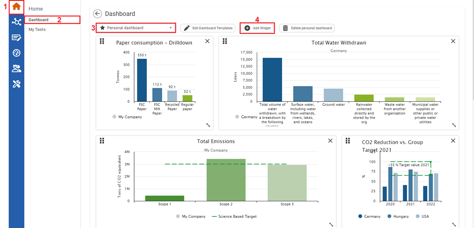
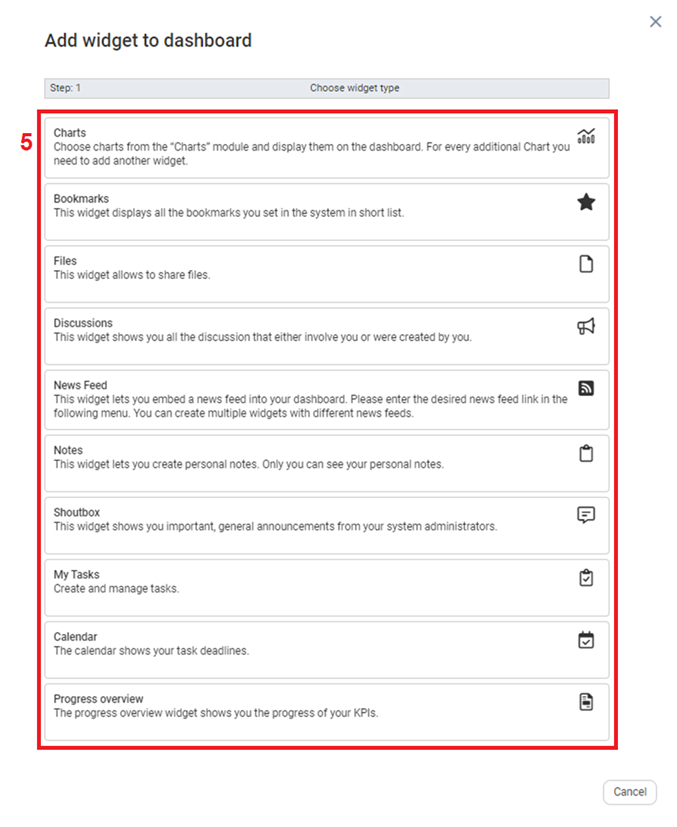
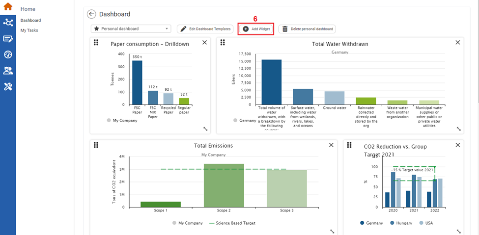

To Edit the Personal Dashboard

| 1 | On the left navigational panel, click the Home icon. The Home menu appears. |
| 2 | Click Dashboard. The Dashboard window appears. |
| 3 | In the Dashboard dropdown type, click Personal dashboard |
| 4 | Click Add Widget. Add Widget to dashboard window opens. |

| 5 | Click a widget you want to add to your dashboard. The widget is added to the dashboard. Depending on the widget selected there may be additional steps in adding the widget such as chart and News Feed. The remaining widgets can be added by clicking the widget type. |

| 6 | You can continue to add widgets by clicking Add Widget, and selecting widgets you want to add. |
Once widgets are added to your dashboard, you can resize, reorder, and delete widgets on your dashboard.